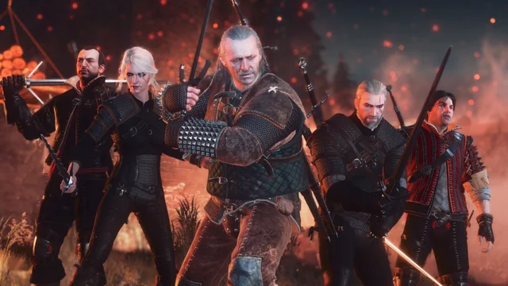
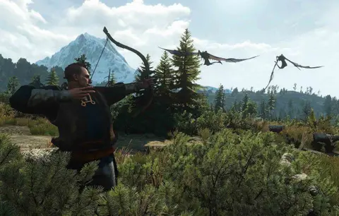
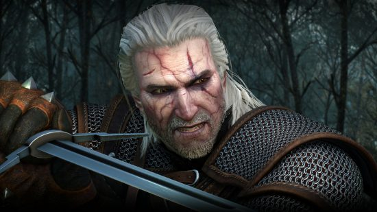
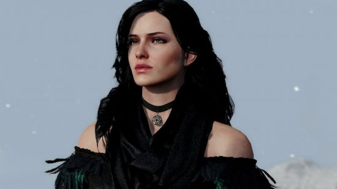
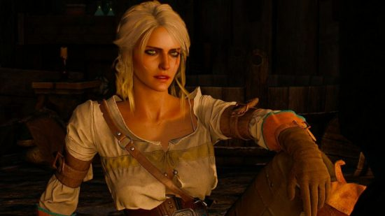
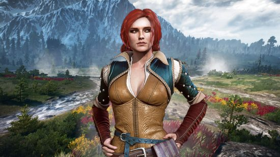
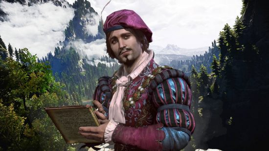
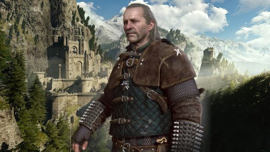

This page provides backstories to main and vital characters. Many characters provide much structure to the main story of the game. Different characters have different relationships with Geralt as they progress throughout the game. Choices that are made in respect to discussions and paths that Geralt encounters paves the course of the game and its multiple endings. Having strong bonds and making intuitive decisions that are based on the characters past relationship with Geralt are vital to understand who is on his side. Many different people are encountered during the game play throughout various story missions and side quests but all play an important role in understanding how the hierarchy works in this world. From peasants to kings many people cross Geralt's path and many need help along the way. Many enemies come from tribes and long lasting feuds with witchers in general. Being provided the information here allows you to understand how they function and think and allows you to exploit weaknesses as well.
What is a Witcher?

The Witcher is not a person, but rather a profession. To put it simply, they're monster hunters. The Continent, the land where the Witcher takes place, has a variety of beasts and ghouls. Some notable examples include the walking spirit of a forest called the leshen that's made up of plants, animal pelts and skulls, and the bruxa, a powerful female vampire who has a deafening scream. Witchers are trained to dispose of these monsters using a variety of tools and weapons at their disposal. Their most useful is their silver swords because the metal is usually the most effective against unholy beasts. They also have a selection of simple magic spells called Signs that can be cast using a particular sign with their hands. Two commonly used are the telekinetic push Aard and the fire spell Igni. Witchers can use Signs quickly in a battle at the expense of a bit of their own endurance. One of the most important Witcher tools is a silver medallion. These magical neckpieces vibrate when monsters are nearby or if magic is being used, which makes them invaluable to a monster hunter.
How does one become a Witcher?

"This World Doesn't Need A Hero; It Needs A Professional."-Geralt of Rivia
Witchers are not born, they're made. Orphaned kids make up many of the monster hunters, and they're trained at schools located in different parts of the world. Each one has their own specialties and is represented by a different animal: Wolf,Cat,Viper,Griffin,Bear,Manticore,CraneThose training to become a Witcher learn magic, bestiary, weapons and herbalism. Once ready, a student will partake in a Trial of the Grasses where they're strapped to a table and are given different chemicals called Grasses. This process is what gives a Witcher several physical advantages such as improved healing, the ability to see in the dark and supernatural strength. The trial is painful and dangerous with most wannabe Witchers dying in the process. A student becomes a full-fledged Witcher once the trials are over. They will then travel across the land hunting monsters for money, being despised by others for their unique appearance. Witchers are a dying breed. There are far fewer monster hunters as the lands have become safer, so their services are less needed. The Witchers are also reluctant to train new recruits as they're all too familiar with the pain from their trials.
Who is Geralt of Rivia?

"If I have to choose between one evil and another, then I prefer not to choose at all." — Geralt
Let's start with the basics: Geralt of Rivia is a Witcher, and a Witcher is a professional monster hunter. To become a Witcher, one is typically taken from their family at a young age and put through rigorous training--including the infamous Trial of the Grasses--where children are pumped full of alchemical ingredients. Most do not survive, and the ones that do gain superhuman reflexes, senses, and abilities. The trade-off is that once a Witcher completes their training, they are allegedly devoid of emotion. Witchers then traditional travel the world hunting monsters for money. But Geralt tends to bend the rules on that time-honored policy because he has a good heart.
So what makes Geralt so unique? Well, not much actually. He's not some chosen hero destined to save the world and he isn't more powerful than other Witchers. He's just trying to help his friends and, through fate, his destiny is inexplicably connected to the most powerful being in the universe, Cirilla Fiona Elen Riannon--don't worry, most characters call her Ciri for short.
Yennefer?

"So I'm Not Going To Meet A Tall Dark Stranger? I Shall Have To Content Myself With You, Geralt."-Yennefer
Yennefer of Vengerberg, is a key character in the Witcher universe. She's considered Geralt's true love, but many times, she acts more like a partner-in-crime in his adventures. Like Geralt, Yennefer had a rough childhood, which contributed to her strong will. She was born with a humpback and is a quadroon, a person who is a quarter elven on her mother's side. Her father abused her over these differences and once he left, her mother continued the abuse. Yennefer was picked to join the Aretuza Academy to be trained as a sorceress. She was one of the best students and was able to heal her spine and use magic to give her a legendary beautiful appearance. The two met during one of Geralt's adventures involving a djinn, an air elemental most people would recognize as a genie from a lamp. When his friend was ill and could only be cured by magic, Geralt made his way to the city of Rinde where Yennefer was. After a standoff, they worked together to defeat the monster and fell in love.
Why is Cirilla important?

"Demolish The Place"-Ciri
Unlike the first two games, Geralt's father-daughter relationship with Ciri drives the plot of the third game. However, Ciri isn't Geralt's biological daughter. In fact, due to the trials they undergo, Witchers are infertile. So how did Geralt and Ciri meet? Before Ciri was born, Geralt lifted a curse on her father, a man named Duny. Instead of asking for money, Geralt invoked The Law of Surprise, which means the next surprising thing that happens to Duny must be surrendered to Geralt. To Duny's surprise, his lover--the Queen of Cintra--was pregnant with a girl. Six years passed and Geralt returned to collect from Duny and his wife, but ultimately decided not to take Ciri. It wasn't until Cintra fell to the Nilfgaardian Empire a few years later that Geralt agreed to train Ciri at Kaer Morhen and hide her from Nilfgaard.
Ciri's potential ability to move between Spheres makes her of particular interest to the Wild Hunt, and her Elder Blood is why Francesca and the Elves, who believe her to be integral to the Prophecy of Ithlinne and their pursuit of Dol Blathanna, consider her so important
Triss

"The dream’s within reach now. I’m not about to let it go.”- Triss
Triss Merigold of Maribor is a skilled sorceress, and another mainstay in the Witcher world. She has a proficiency for healing magic and often carries many magical potions, but can never use them herself as she’s allergic to magic. She has close ties with both Yennefer and Geralt, having had romantic ties with the latter in the past. The Witcher 3 sees her holed up in Novigrad, helping other mages who are suffering persecution from the witch hunters and Radvoid’s forces. She enters an arrangement with the King of Beggars, paying for his protection by providing magic services to his organisation. She promises to do everything within her power to help Geralt in his search for Ciri.
Dandelion

"Despair is like a stormy sky. Sooner or later the sun must drive away the clouds."-Dandelion
Dandelion, also known in the original Polish translation and the Netflix series as Jaskier, is a poet, bard, minstrel, and downright great character. He also happens to be Geralt’s closest friend, though Geralt doesn’t always seem too happy about that fact. Known to be quite the womaniser, Dandelion is always off trying to woo the ladies, and often gets himself in some tricky situations as a result. Having travelled far and wide in the previous games, The Witcher 3 sees Dandelion settling down in a way. He now co-owns a tavern in Novigard called Rosemary and Thyme alongside his and Geralt’s old pal, Zoltan.
Vesemir

“Humans delude themselves that they are masters of the world, but when faced with the majority of predators on their terms, in their environments, the average human has just enough time to reconsider such thoughts before turning into a pile of entrails."-Vesemir
Vesemir is the oldest and most experienced witcher at Kaer Morhen, and acts as a father figure to Geralt and the other witchers. He was one of the few witchers that managed to survive the assault on Kaer Morhen, but was only a fencing instructor at the time, and therefore did not possess the necessary knowledge required to create new mutagens in order to turn more boys into witchers. He plays a key role in The Witcher 3, and begins the story by joining Geralt on his search for Yennefer across the war-ravaged land of Temeria.